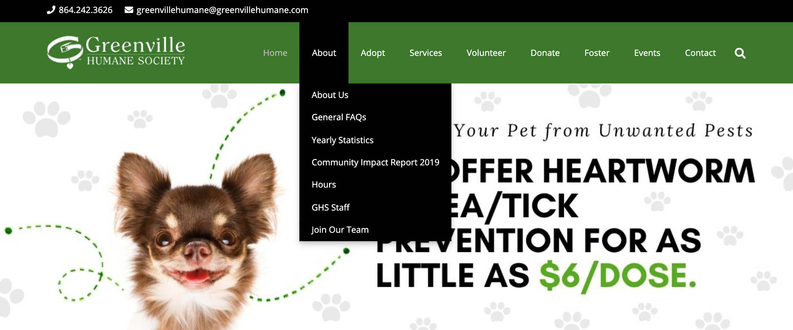
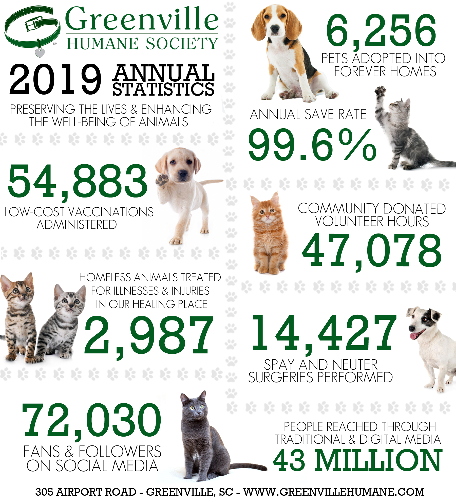
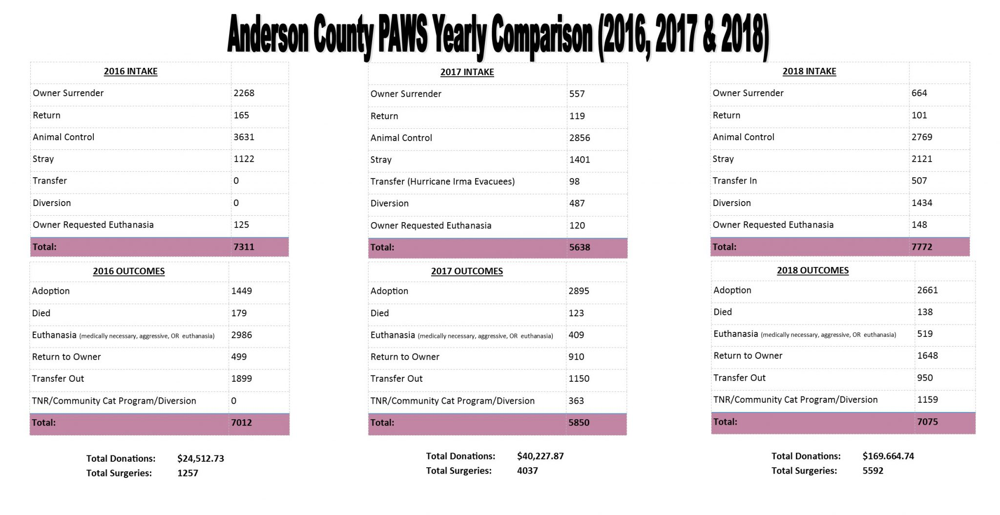
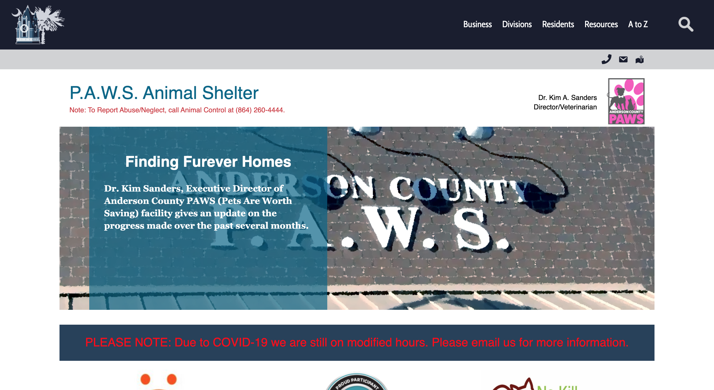
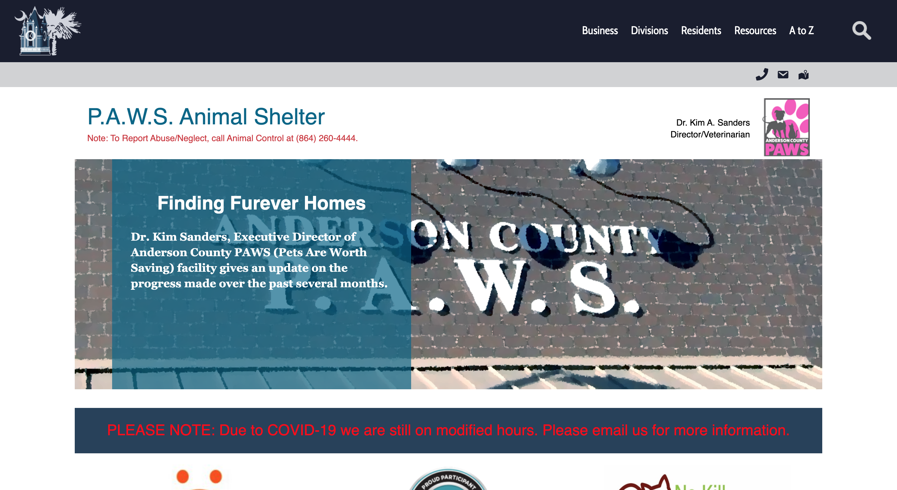

Secondary Research
This portion of research is geared towards outside sources, new delevopments, and other shelter's website's successes.
The Greenville Humane society does an excellent job of keeping a consistent brand identity throughout their website. They have a logo that stands apart from the slew of "cat in dog in house" logos. The color palatte is clearly defined and provides consistency throughout thier website, social media, graphics, and the actual building they are in.
In terms of website content, the Greenville Humane Society has a clear directory at the top of the page, with easy access to any information a viewer could need. They also have larger buttons throughout the site to direct customers to the correct place for their desired information.
In a direct comparison between Anderson PAWS and the Greenville Humane Society, we can see how a little bit of design and effort can go a long way in making information easier to digest and more appealing to look at. In turn, the Greenville Humane Society statistics are being read more, and are creating a larger impact.
 Greenville County Animal Care is the equivalent of PAWS in Anderson. They are both non-profit animal shelters run by the county. Both shelters house thier websites as webpages under thier respective county's main websites.
However, Greenville County Animal Care is an excellent example of how a webpage within a main site can still provide all of the necessary information, showcase a brand, and draw a viewer in. Below you can see a side by side comparison of both webpages.
 

On Animal Care's site, the contact information